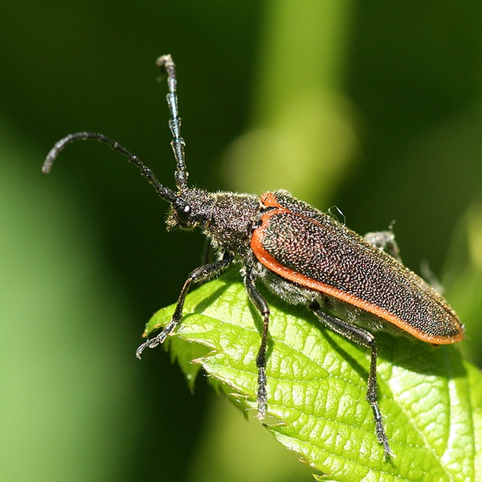
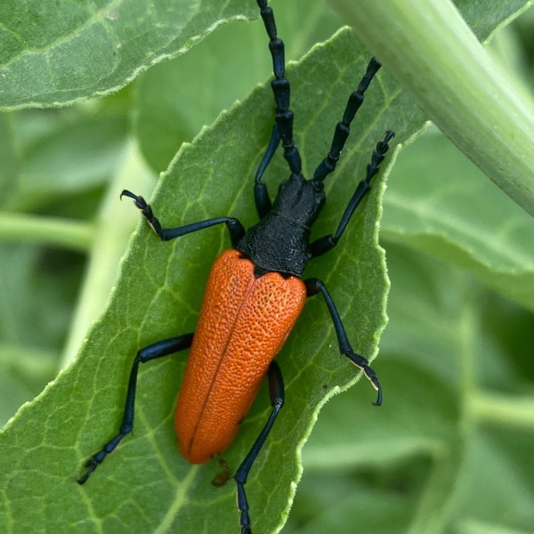

Female

Male
Desmocerus aureipennis
Common name
Golden-winged Elderberry Borer
Family
Cerambycidae
Family common name
Long-horned beetles
Commonly observed
L March to September
Size
Females about 3 cm; males about 2.5 cm
Range Map
Seasonality